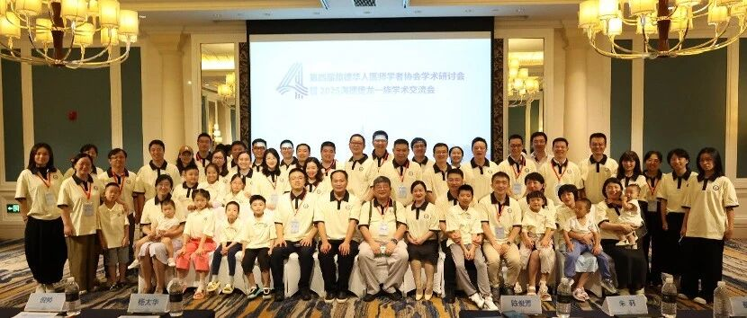
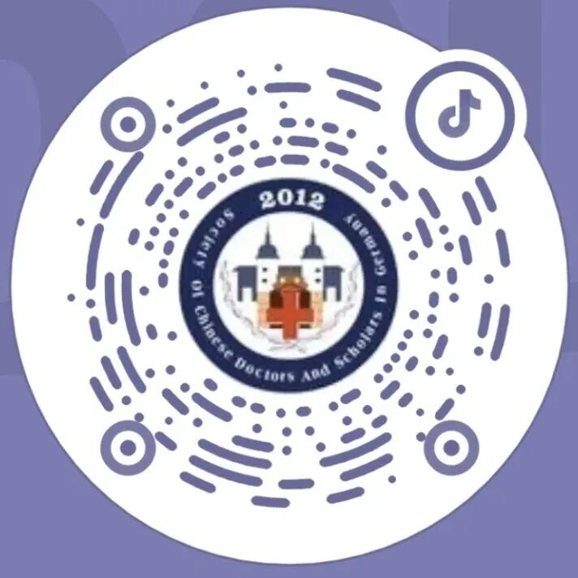

参会对象青年医师与科研学者
SCDSG
FORUM
2026
YOUNG CHINESE MEDICAL SCHOLARS FORUM IN GERMANY
青年医学研究与中德学术交流
论坛征集基础医学、临床医学、转化医学、生命科学、药学与化学、医学人工智能及生物医药交叉学科等方向的研究成果，设置主旨报告、青年学者报告、壁报展示与专家评议。

会议日期
2026 年 11 月 14 日
德国海德堡｜线下为主，线上同步
免费注册参会核心舞台2 场 Keynote · 10 场青年报告 · 壁报展示
会议语言学术报告以英文为主｜交流环节可使用中文、德文或英文
ABOUT THE FORUM
面向青年医学与生命科学研究者的学术交流平台
论坛主要面向在德国从事医学与生命科学研究或临床工作的博士研究生、博士后、青年研究人员及医师，并欢迎中德医学合作相关人员参与。论坛旨在为高质量研究提供专业展示与同行评议机会，促进学术反馈、方法交流及潜在合作。
拟邀主旨讲者将围绕脑肿瘤研究、精准医学及临床转化等方向作专题报告。
论坛计划遴选 10 项口头报告，并设置壁报展示与专家现场评议环节。
推动德国科研机构、临床医疗体系与中国医学院校之间的专业协作。
拟邀主旨讲者与评审专家
邀请推动基础发现与临床转化的学者分享前沿成果及专业判断
以下人员为拟邀人选，尚未确认出席。正式 Faculty 名单及出席信息以协会后续公告为准。
 拟邀 KEYNOTE
拟邀 KEYNOTE
01 / DKFZ
刘海坤博士｜DKFZ 分子神经遗传学部门负责人
德国癌症研究中心（DKFZ）主要研究方向包括脑肿瘤干细胞生物学、肿瘤休眠机制、患者来源类器官模型及精准治疗策略。其团队综合应用单细胞组学、CRISPR/Cas9 基因编辑及人工智能方法，解析胶质母细胞瘤的分子与细胞异质性。
查看 DKFZ 官方资料 ↗ 拟邀 KEYNOTE
拟邀 KEYNOTE
02 / TONGJI UNIVERSITY SCHOOL OF MEDICINE
同济大学医学院专家｜人选待定
拟由合作医学院选派专家作 Keynote Lecture具体讲者及报告主题将在双方完成学术与会务确认后公布。本席位目前仅作为会议方案中的拟邀安排，不代表任何个人已确认出席。
了解拟合作医学院 ↗拟邀嘉宾孙崇教授 · DKFZ
研究方向：肿瘤免疫调控及免疫治疗机制
拟邀嘉宾周小波教授 · Mannheim
研究方向：心血管机制、内皮功能及电生理
拟邀嘉宾孔波 医学博士 · 海德堡大学医院
研究方向：胰腺疾病外科及转化研究
会议议程概览
会议议程将依次围绕研究发现、成果展示、专业讨论及合作连接展开
以下为初步日程，最终安排以正式会议通知为准。
SATURDAY
青年科学主场
13:00—18:30 · Heidelberg
OPENING
开幕式与嘉宾致辞
15 分钟
KEYNOTE LECTURE I
主旨报告 I
30 分钟
YOUNG INVESTIGATORS · I
青年学者口头报告（上半场）
5 位报告人 × 17 分钟，共 85 分钟
BREAK + POSTER SESSION
茶歇与 Poster 展示
Poster 展示 60 分钟；最佳 Poster 投票 5 分钟
KEYNOTE LECTURE
主旨报告：同济大学医学院
30 分钟
YOUNG INVESTIGATORS · II
青年学者口头报告（下半场）
5 位报告人 × 17 分钟，共 85 分钟
CLOSING REMARKS
大会主席和评委代表总结点评
10 分钟
AWARDS
颁奖仪式
10 分钟
学术议题
研究方向包括但不限于
基础医学
Basic Medicine
临床医学
Clinical Medicine
转化医学
Translational Medicine
生命科学
Life Sciences
药学与化学
Pharmaceutical Sciences · Chemistry
医学人工智能
Medical AI
生物医药交叉学科
Interdisciplinary Biomedicine
其他医学与生命科学相关方向
Other Related Areas
CALL FOR ABSTRACTS · NOW OPEN
欢迎提交医学与生命科学研究摘要，并在海德堡进行学术展示
所有投稿将接受匿名学术评审，综合排名前 10 的摘要将获邀进行口头报告；其余高质量投稿将根据评审结果进入壁报展示环节。
投稿格式
英文 · 不超过 300 词
- 原创医学或生命科学研究
- 摘要采用匿名学术评审
- 口头报告 15 分钟 + 5 分钟问答
- 入选壁报将在论坛现场集中展示并接受评议
重要日期
YOUNG SCIENTIST RECOGNITION
表彰兼具研究质量、创新价值与学术表达能力的青年学者
评选工作拟由协会与合作医学院共同组织，评价维度包括科学质量、创新程度、学术表达及未来研究潜力。
€200奖金
表彰在研究质量、创新价值、学术表达与发展潜力方面表现突出的青年科学家，获奖者将获得荣誉证书与学术传播支持。
表彰研究质量、报告结构及现场学术交流表现突出的口头报告，获奖者将获得荣誉证书与纪念礼品。
表彰科学内容、视觉表达及现场讨论质量突出的学术壁报，获奖者将获得荣誉证书与纪念礼品。
其他学术支持
- 优胜者可获邀参加同济大学青年论坛
- 按相关活动安排报销食宿并给予奖励
- 获得协会学术传播与后续交流支持
ORGANISERS & PROPOSED PARTNER
依托旅德华人医学与生命科学网络，促进中德医学交流与协作
协办及合作单位的状态将根据正式确认结果动态更新；页面提及的 DKFZ、UKHD 及 Mannheim 现阶段仅用于说明拟邀专家的机构归属，不代表相关机构已确认参与协办。
旅德华人医师学者协会（SCDSG）
旅德华人医师学者协会源起于 2012 年成立的“海德堡龙一族”，并于 2016 年在海德堡正式成立为非营利学术组织，服务于德国、欧洲及中国的华人医学与生命科学专业群体。
了解协会 ↗
同济大学医学院｜拟重点合作单位
同济医学的历史可追溯至 1907 年创办的德文医学堂，长期以来持续推动中德医学教育、科研及人才交流。学院拥有覆盖基础医学、临床医学、转化医学和医学交叉创新的教学科研体系，并依托多家附属医院开展临床与转化研究。
- 拟选派一位医学院专家作 Keynote Lecture
- 拟共同参与摘要评审、青年学者奖项及联合证书
- 优胜者拟获邀参加同济大学青年论坛，并按活动安排报销食宿、给予奖励
ABSTRACT SUBMISSION
提交研究摘要，申请口头报告或壁报展示
欢迎提交英文研究摘要，申请青年学者口头报告或壁报展示。投稿材料包括题目、研究方向、摘要、关键词、个人简历及补充图表（可选）。
FAQ
参会常见问题
谁可以投稿和参会？
论坛面向医学、生命科学及相关交叉领域的本科生、硕士研究生、博士研究生、博士后、青年医师、青年 PI 及其他青年研究者。
投稿需要准备哪些材料？
请在线填写英文题目、研究方向、英文摘要和关键词，并上传 PDF 格式个人简历；补充图表为可选材料。英文摘要不超过 300 词。
可以选择口头报告或壁报展示吗？
投稿时可选择口头报告、壁报展示或均可。该选择仅代表投稿偏好，最终展示形式由评审委员会根据匿名评审结果确定。
投稿和评审的关键日期是什么？
投稿截止时间为 2026 年 9 月 30 日 23:30（UTC+2），评审结果计划于 10 月 8—10 日公布，论坛于 11 月 14 日举行。
可以在线参加吗？
论坛以德国海德堡线下会议为主，并计划提供线上参与方式。具体接入信息将通过协会官方渠道另行通知。
参加本次学术论坛是否需要缴费？
本次青年学术论坛免收注册费，会议现场将免费提供茶歇与茶点。除大会特邀嘉宾外，参会人员的交通及住宿费用自理。


抖音SCDSG